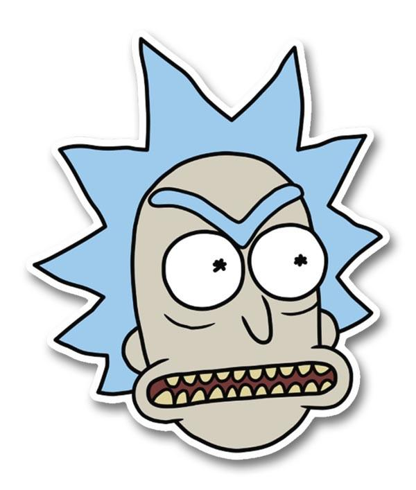
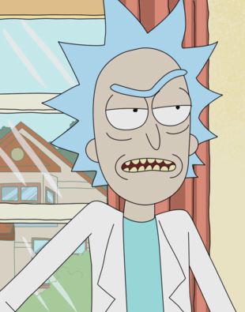
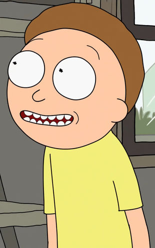
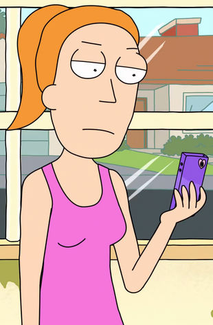
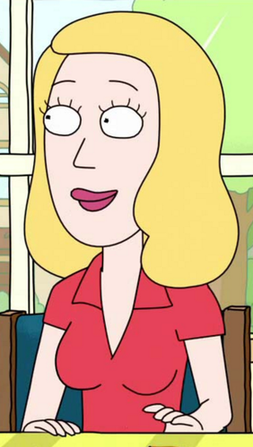
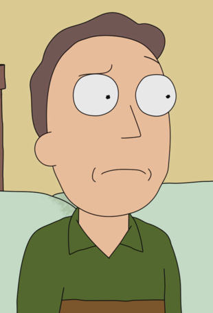
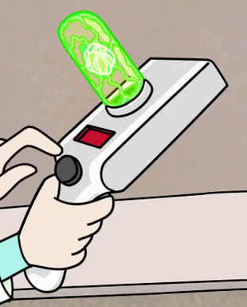

 RICK AND MORTY
-
HOME
RICK AND MORTY
WUBBA, LUBBA, DUB, DUB

“ “Wubba lubba dub-dub!”Rick's Season 1 catchphrase Rick Sanchez is the co-eponymous main character and leading protagonist of the show. He is a genius scientist whose alcoholism and reckless, nihilistic behavior are a source of concern for his daughter's family, as well as the safety of their son, Morty. He is voiced by Justin Roiland.

“ Mortimer "Morty" Smith Sr. is one of the two eponymous main protagonists in Rick and Morty. He is the grandson of Rick and is often forced to tag along on his various misadventures. Morty attends Harry Herpson High School along with his sister, Summer.

Summer Smith is the daughter of Jerry Smith and Beth Smith, the older sister of Morty Smith, the granddaughter of Leonard Smith, Joyce Smith, Rick Sanchez and Mrs. Sanchez/Diane Sanchez, the great-granddaughter of Rick's Father and a unnamed woman, and the great-niece of the Unnamed Uncle, she currently acts as the older sister and the granddaughter of the Morty Smith and Rick Sanchez from Dimension C-137. She is the only other member of the Smith Family to be aware of that fact.

Beth Smith (née Sanchez) is the daughter of Rick Sanchez and Mrs. Sanchez/Diane Sanchez, the wife of Jerry Smith, and the mother of Summer Smith and Morty Smith, she is also the daughter-in-law of Leonard Smith and Joyce Smith, and the granddaughter of Rick's Father and a unnamed woman. She currently acts as the mother and the daughter of the Morty Smith and Rick Sanchez from ension C-137, respectively. She is currently employed as a veterinary surgeon at St. Equis Hospital.Characterized by a superiority complex and abandonment issues, Beth gradually came to struggle with her husband over his contributions to their marriage, due in part to his lower-level position and subsequent employment, further driven by her father influencing her feelings of superiority. Since their divorce, she has focused on raising her two children. However, by the finale she decides to reconnect with Jerry and they are living together with their children and her father.

Jerry Smith is the husband of Beth Smith, the father of Summer Smith and Morty Smith, and the son-in-law of Rick Sanchez and Mrs. Sanchez/Diane Sanchez, he is also the son of Leonard Smith and Joyce Smith, and the nephew of the Unnamed Uncle, he currently acts as the father and the son-in-law of the Morty Smith and Rick Sanchez from Dimension C-137, respectively. He shares the same history as his C-137 counterpart until the Cronenberg disaster, where it was averted in his dimension.Jerry always tries to think of the best interest of the family, but his attempt to be the patriarch of the family can often be misguided by his self-centered nature. This causes him a great deal of conflict with Rick, as his father-in-law clearly has no respect for him whatsoever.

Portals allow travel between two different locations. Usually, these locations exist in the same universe. The only groups that have been known to use intergalactic portal technology are the Ricks and the Galactic Federation (Intergalactic Customs in "Pilot "). Some organizations and people have knowledge of interdimensional portal technology, but it is unclear whether they possess it or not (e.g. Time Court, Morty Smith (304-X), and The people of "Fart").The Portal Gun is a gadget that allows the user(s) to travel between different universes/dimensions/realities. The Gun was likely created by a Rick, although it is unknown which one; if there is any truth to C-137's fabricated origin story, then he may not be the original inventor.